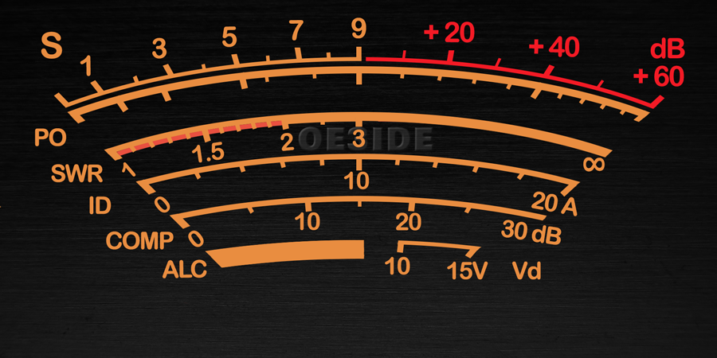
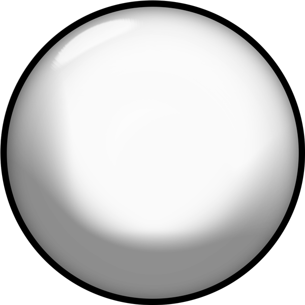

Output: altifalantes, VB-Cable, VAC, etc.
Quadratura OFF: RMS por defeito. HF ON: dBm na barra.
O rádio não está enxergando o dispositivo!
Não foi possível estabelecer conexão com o receptor SDR. Certifique-se de que o hardware USB está devidamente conectado ou, no caso de conexão de rede (RTL-TCP), verifique se o servidor remoto está ativo e acessível.
Recomendamos revisar as configurações de tipo de dispositivo, endereço de IP, porta e parâmetros associados antes de tentar ligar o rádio novamente.